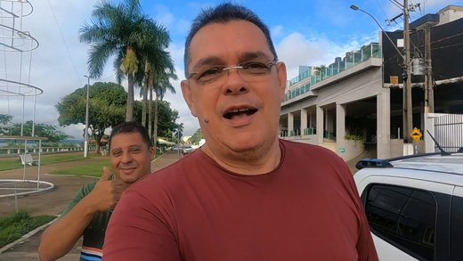

00:00:19.200
Emanuel Júlio e Railson aparecem ao lado de um carro branco, com palmeiras e a calçada da orla atrás.
Orla do Xingu, Altamira (PA) · confirmado
O apresentador anuncia a viagem de Altamira a Novo Repartimento e apresenta Railson, que dirige o carro.
Transcrição · 00:00:09 | 00:00:19 | 00:00:26 | 00:00:32
Turismo Aqui — quadro de vídeo publicado no YouTube